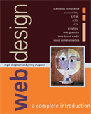

See the book at amazon.co.uk or amazon.com
Related Books

See Digital Multimedia at amazon.co.uk or amazon.com

See Web Design: A Complete Introduction at amazon.co.uk or amazon.com
The authors are not responsible for the content of any external sites linked to from digitalmediatools.org
All material on this site is ©2007–2010 MacAvon Media and may not be reproduced without permission.
Dreamweaver Projects
These projects are relatively small. You can find some larger, more complex projects which also require the use of Dreamweaver on the multimedia projects page.
CV
Create a Web page for your CV (curriculum vitae or resumé). The page should be aimed at prospective employers or clients who may wish to find out about your qualifications, experience, and so on. Use CSS formatting to produce an attractive layout that is easy to read and makes it easy for them to find essential information. Include any links that seem relevant, for example, to the Web site of your college or school or to show work you may already have done on the Web.
Typewriter Text
Using only CSS styles to specify formatting, create a Web page containing text that looks like a double-spaced typewritten manuscript. That is, it should use a fixed-width font on a suitable line height, with ragged right margins and underlining for emphasis and headings. Test the page on different browsers.
Favourites
Create a small Web site containing links to all of your favourite Web sites (all your bookmarks), with a short description of each site you link to. Devise a way of organizing the links on different pages so that each page can fit on a typical screen, and add navigational features that will help visitors to the site find links of interest to them. Don’t try to add a site searching facility, but make the navbars and so on provide the necessary orientation.
Poster
Make a Web page in the form of a poster, with a large background image with text and possibly other images superimposed on it. Use whatever means are necessary to ensure that the page will display sensibly if the user changes the font size in their browser.
Rainbow Colours
Design a page for children learning to read, with bold buttons, labelled in a suitable font with the names of different colours of the rainbow. The buttons should start out some dull colour, but when the cursor rolls over a button it should change to the corresponding rainbow colour. Do this project twice, once using JavaScript image swaps, the other time using CSS rollovers.
Tool Tip Rollovers
Using only CSS, make some rollovers which behave as buttons with tool tips. That is, when the cursor rolls over a button, a short descriptive text appears next to it, explaining what its function is.
Institutional Branding
Design a template to provide a new look for your university’s or company’s site, where every page bears the institution’s logo or id, a copyright statement, a note of when it was last updated, and a uniform navigation bar which visitors can use to reach the most important pages on the site from every other page. Base this navigation bar on the site’s existing structure. Redo a few pages from the site using your template.